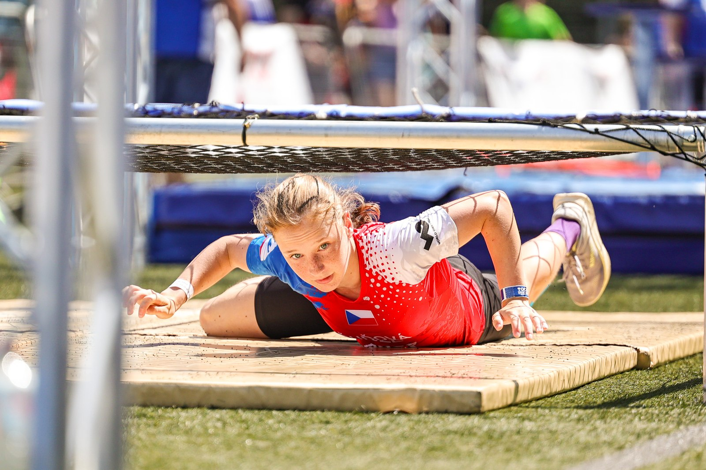
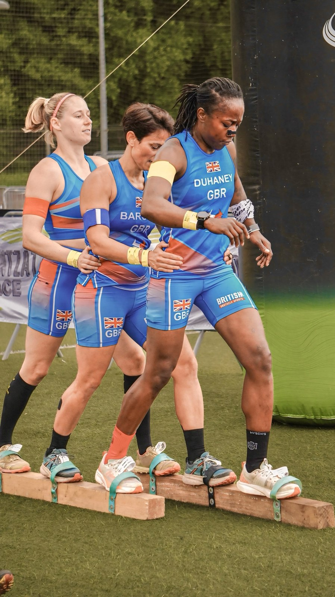

The OCR European Championships (Campeonato de Europa de OCR) took place from Thursday 28 to Sunday 31 May 2026 in Irun, Gipuzkoa, in Spain's Basque Country, with event coverage by the Image Media team. It was the ninth edition of the European Obstacle Sports Federation's (EOSF) continental championship and the first time it has been held in Spain, staged in partnership with the host national federation, OCRA España.

Organisers and the Ayuntamiento de Irun reported 2,573 athletes from 28 countries entered across the championship, with Spain fielding the largest national delegation at 660 athletes, roughly a quarter of the field. Competition was split across several formats: the OCR100, a 100-metre course with 12 obstacles staged at the San José Obrero football field; the Short Course, a 3.5km relay-format race through the city centre with around 900 participants; and the Standard Course, the main championship event over roughly 13km, held on Saturday 30 May.
The championship arrived at a notable moment for the sport: obstacle course racing is set to make its Olympic debut at the Los Angeles 2028 Games, adding weight to an event already established as OCR's top continental fixture. No overall results or medal standings had been published by the EOSF, OCRA España or the Ayuntamiento de Irun at the time of writing, so none are reported here.

The Image Media coverage team at the OCR European Championships in Irun comprised Michael Rosa, Paulo Nomade, Sergio Mendes, Fran Paulino, Douglas Santos and Unai Martínez.